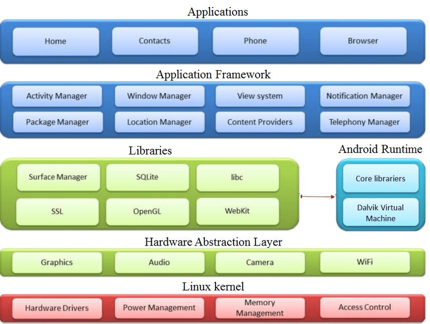

Android Architecture
Android operating system is a stack
of software components which is roughly divided into five sections and four
main layers as shown below in the architecture diagram.
Linux kernel
At the bottom of the layers is Linux
- Linux 2.6 with approximately 115 patches. This provides basic system
functionality like process management, memory management, device management
like camera, keypad, display etc. Also, the kernel handles all the things that
Linux is really good at such as networking and a vast array of device drivers,
which take the pain out of interfacing to peripheral hardware.
Libraries
On top of Linux kernel there is a
set of libraries including open-source Web browser engine WebKit,
well known library libc, SQLite database which is a
useful repository for storage and sharing of application data, libraries to
play and record audio and video, SSL libraries responsible for Internet
security etc.
Android Runtime
This is the third section of the
architecture and available on the second layer from the bottom. This section
provides a key component called Dalvik
Virtual Machine which is a kind of Java Virtual Machine specially designed
and optimized for Android.
The Dalvik
VM makes use of Linux core features like memory management and multi-threading,
which is intrinsic in the Java language. The Dalvik
VM enables every Android application to run in its own process, with its own
instance of the Dalvik virtual machine.
The Android runtime also provides a
set of core libraries which enable Android application developers to write
Android applications using standard Java programming language.
Application Framework
The Application Framework layer
provides many higher-level services to applications in the form of Java
classes. Application developers are allowed to make use of these services in
their applications.
Applications
You will find all the Android
application at the top layer. You will write your application to be installed
on this layer only. Examples of such applications are Contacts Books, Browser, Games etc.
Android Architecture
